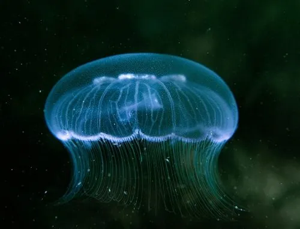

其他无脊椎动物 · 动物界
海月水母 Aurelia aurita

半透明的圆盘状水母，伞面有四个醒目的马蹄形生殖腺，常见于近岸海域，触手短而毒性微弱，是水族馆常见的展示对象。
- 分类
- 门刺胞动物门纲钵水母纲目旗口水母目科海月水母科属海月水母属
- 栖息环境
- 近岸浅海、海湾与河口，常随潮流集群
- 地理分布
- 全球温带与热带沿海，包括中国黄海、渤海和东海
- 保护级别
- 暂无评估
物种志
海月水母伞径通常 10–25 cm，最大可达 40 cm，伞体半透明，边缘有数百条细短触手，伞面中央能透出四个马蹄形或环形的生殖腺，胃腔的辐管呈四射状，因此得名海月。
它的生活史有世代交替：水母体释放精卵，受精卵发育成浮浪幼虫，附着后变为水螅体，水螅体通过横裂生殖产生碟状幼体，再长成水母体。海月水母捕食浮游动物、鱼卵和幼鱼，用触手粘住猎物后送入口中。在富营养化海域，它常大量暴发，与鱼类争夺食物，也会堵塞渔网和发电厂的进水口。它广泛分布于全球温带和热带近岸海域，中国黄海、渤海和东海都能见到；刺细胞毒性弱，敏感者接触后可能出现皮肤发红。
形态与习性
- 食性捕食浮游动物、鱼卵和幼鱼
- 伞径通常 10–25 cm，最大可达 40 cm
- 生活史水母体与水螅体世代交替，水螅体横裂产生碟状幼体
- 毒性触手刺细胞毒性弱，敏感者可能皮肤不适
- 生态影响暴发时可与鱼类争食，堵塞渔网与进水口
- 分布全球近岸海域，中国沿海常见
趣味知识
- 海月水母伞面上的四个马蹄形结构是它的生殖腺。
- 它的生活史包含水螅体和水母体两个世代，水螅体能横裂出小水母。
- 海月水母大量暴发时，会堵塞发电厂的冷却水进水口。